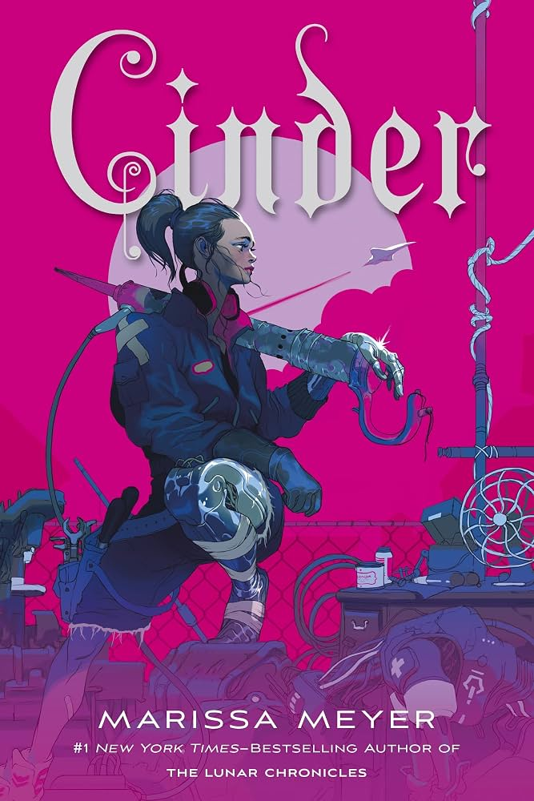
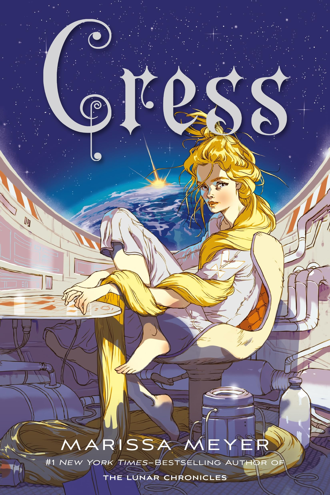
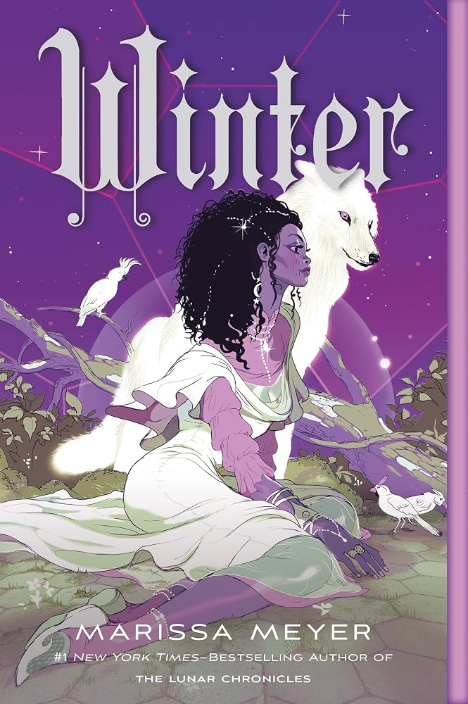

Cuando Cinder conoce a Kai, el príncipe de Nueva Pekín, el mundo está patas arriba: una plaga mortal está causando estragos entre la población del reino, y los científicos trabajan contra reloj para encontrar una posible vacuna. Tras el contagio de Peony, hermanastra y única amiga de Cinder, esta se presenta voluntaria a las pruebas médicas del misterioso doctor Erland, unas pruebas a las que ningún otro participante ha sobrevivido. Pero, para sorpresa de todos, Cinder sale con vida. Y no solo eso: en el hospital se descubre un secreto de su pasado que podría cambiar el futuro del mundo... y unir a Cinder y Kai de forma inesperada.

Cress es una chica de dieciséis años que ha vivido toda su vida encerrada en un satélite, sin más compañía que las pantallas que la rodean. Atrapada en esta prisión se ha convertido en una hacker estupenda, pero sus captores la fuerzan a emplear sus habilidades para ayudar a la malvada reina Levana a encontrar a Cinder y entregarla a su majestad. Sin embargo, cuando Cress da con Cinder y su acompañante, el Capitán Thorne, los fugitivos le ofrecen una alternativa que no puede rechazar: si ella les ayuda a boicotear los planes de Levana para casarse con el emperador Kai, Cinder y Thorne (juntamente con Scarlett y Wolf), rescatarán a Cress de su confinamiento. Ahora bien, tras el fallido intento de rescate, el grupo se divide: Cress consigue su libertad, pero a cambio de un precio mucho más alto de lo que había previsto.

Por su amabilidad y elegancia, Winter siempre ha sido admirada por la gente de la Luna; incluso se dice que su belleza es aún mayor que la de su madrastra, la reina Levana. Winter no soporta a su madrastra, y sabe que esta jamás aceptará lo que siente por su amigo de la infancia, el guardia real Jacin. Pero Winter no es tan débil como Levana cree, y lleva años tratando de desbaratar en secreto los malvados planes de su madrastra. Junto con la cíborg Cinder y sus aliados, Winter deberá iniciar una revolución y poner fin a una guerra que ya ha durado demasiado tiempo. ¿Podrán Cinder, Scarlet, Cress y Winter vencer a Levana y tener cada una su propio final feliz?